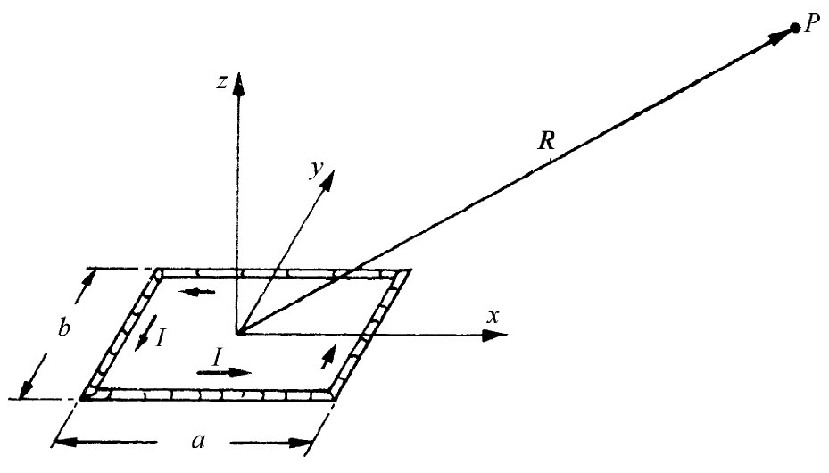
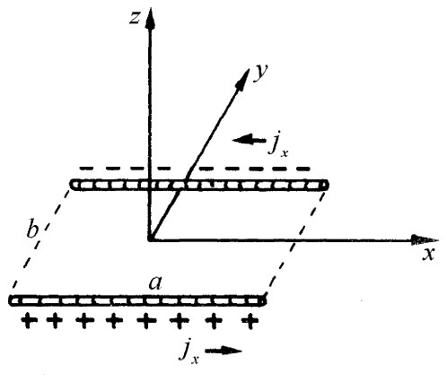
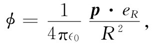
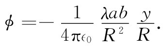

让我们应用矢势的方法求出一个小电流回路的场。所谓“小”者，照例它仅仅指我们所感兴趣的乃是远比回路尺度大得多的那些距离处的场。结果将得出，任一个小回路就是一个“磁偶极子”。这就是说，它所产生的磁场类似于一个电偶极子的电场。
|  |  |
| 图14-6 通有电流I的一个矩形回路。在P点的磁场有多大（R≫a或b） | 图14-7 在图14-6的电流回路中jx 的分布 |
首先考虑一矩形回路，并按照图14-6所示选择我们的坐标系。由于沿z方向并没有电流，因而Az 为零。在长度各等于a的两边则都有沿x向的电流。每一段中，电流密度（以及电流）都是均匀的。因此关于Ax 的解就恰好像来自两根带电棒的静电势（见图14-7）。既然这两根棒各带相反电荷，所以它们在远处的电势只可能是一个偶极子的势（§6-5）。在图14-6中的P点，这势应为
 （14.28）
式中p为该电荷分布的偶极矩。在这种情况下，偶极矩等于一根棒上的总电荷乘以两棒间的距离：
p=λab. （14.29）
这偶极矩指向负y方向，因而R与p夹角的余弦为-y/R（其中y是P点的坐标）。所以我们有

简单地用I/c2 代替λ，我们就得到Ax ：
同理可得
另外，Ay 正比于x，而Ax 则正比于-y，所以该矢势（在远处）绕z轴围成圆环，与回路中的电流I有相同的指向，如图14-8所示。
图14-8 在（xy平面的）原点处一个小电流回路的矢势；一个磁偶极子的场
A的强度与Iab成正比，即是电流乘以该回路的面积。这一乘积称为该回路的磁偶极矩 （常简称“磁矩”）。我们用μ来表示：
μ=Iab. （14.32）
一个具有任何 形状（圆、三角、或其他）的平面小回路的矢势也是由式（14.30）和（14.31）给出的，只要我们用下式来代替Iab：
μ=I×（回路面积）. （14.33）
这留给读者去证明。
如果把μ视作矢量，并将其方向规定为垂直于该回路的平面，由右手定则给出其正的向指（图14-8），则可把有关A的方程写成如下的矢量形式：
现在仍需求出B来。应用式（14.33）和（14.34），连同式（14.4）一起，便可得到：
可见B场分量的表现与由一指向z轴的电偶极子产生的E场的表现完全一样［见式（6.14）和（6.15）以及图6-4］，这就是为什么我们把电流回路叫作磁偶极子的缘故。“偶极子”这个词，当应用于磁场时，是有点令人迷惑不解的，因为并没有 与电荷相对应的磁“荷”。磁“偶极子场”不是由两个“荷”所产生的，而是起因于一电流回路元。
然而，事情显得有点奇怪：从完全不同的两定律▽·E=ρ/∈0 和▽×B=j/∈0 c2 出发，竟会得出形式相同的场。为什么会这样呢？那是由于偶极子场只出现在与所有电荷或电流的距离都很远处。因此通过大部分有关空间，E和B的方程就相同：两者各具有零散度和零旋度。所以它们给出相同的解答。然而，我们用偶极矩来概括的那些源 的位形在物理上却很不相同——对于彼此互相对应的场，在一种情况下源是一环行电流，而在另一种情况下源则是位于该回路平面上与下的一对电荷。